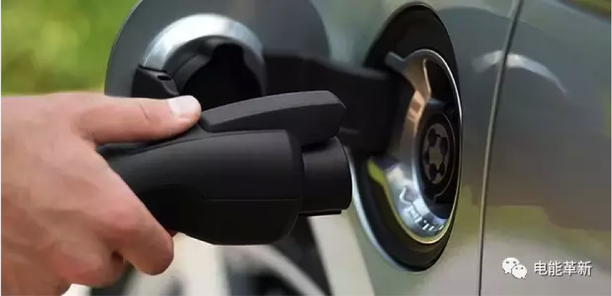

新能源汽车迅猛发展，充电桩建设也在加速。国家能源局9日介绍，2017年我国将力争新增充电桩80万个，其中专用桩70万个，公共桩10万个。北京、上海、广州、深圳等城市公共充电网络已具雏形。
2据新华社2月9日消息，据统计，2016年，全国新增公共充电桩10万个，已累计建成约15万个。居民专用充电桩同步增长，“随车配桩”的安装比例达80%。城际间快充站已服务1.4万公里高速公路，站间平均距离48.6公里。
从重点城市来看，北京、上海电动汽车充电平均服务半径已缩短至5公里；深圳、广州等城市的公共充电网络也在迅速布局，向着“五公里”时代的目标加快推进。
此外，民航、公交、环卫、出租等专用车的充电服务站正在发展。商业模式的创新在这个领域不断拓展，例如太原市利用众筹建桩，快速建成8000多辆电动出租车服务网络。
然而，虽然充电桩产业发展增速较快，但仍处于初级阶段，面临居民区充电设施建设进展缓慢、公共充电设施重建设轻运营、行业发展存在安全隐患等问题。
据介绍，2017年，将重点解决目前充电运营企业之间尚未打通信息和支付等环节的问题，加快实施充电接口新国标，实现充电接口的统一。
随着电动汽车的推广，其对能源消费结构调整和城市环境提升的作用已有所体现，2016年，新能源汽车充电量超过12亿千瓦时，替代燃油约40万吨。